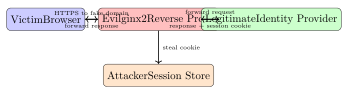
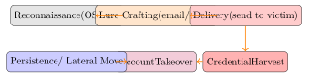

Chapter 27: Human Factors in Security¶
Technology alone cannot secure an organisation. Humans are simultaneously the most critical link in the security chain and its most exploited weakness. Attackers who invest in understanding psychology, organisational culture, and cognitive bias can bypass even the most sophisticated technical controls. Understanding the human factor is therefore as essential to security engineering as mastering cryptography or exploit development.
This chapter covers the psychology of manipulation, attack taxonomies, practical defences, and the cognitive biases that make all of us easier targets than we care to admit.
27.1 Social Engineering: Psychological Foundations¶
Definition 27.1 (Social Engineering)
Social engineering is the manipulation of individuals into performing actions or divulging information that furthers an attacker’s goals, exploiting psychological tendencies rather than technical vulnerabilities.
Robert Cialdini’s six principles of influence underpin most social engineering attacks:
| Principle | Description | Attack Example |
|---|---|---|
| Authority | People comply with perceived authority figures | Attacker poses as CEO demanding urgent wire transfer |
| Social Proof | People follow what others appear to do | “Everyone in your team already signed off on this” |
| Scarcity/Urgency | Rare or time-limited items drive action | “The account will be locked in 10 minutes” |
| Reciprocity | People feel obligated to return favours | Send unsolicited gift, then request sensitive data |
| Liking | People comply with those they like | Build rapport on LinkedIn before attacking |
| Commitment | People honour prior commitments | Get small “yes” answers leading to bigger requests |
27.1.1 Vishing: Voice Phishing in Depth¶
Vishing exploits the human tendency to trust a voice on the phone more than an email, because voice conveys urgency, authority, and personality in ways that text can’t replicate. A skilled visher researches their target before calling: LinkedIn reveals the victim’s job title, team structure, and manager’s name; the company website discloses internal project names and the names of executives; job postings reveal the technology stack and internal team names. Armed with this OSINT, the attacker can open a call with specific, accurate details that make the impersonation instantly plausible.
Caller ID spoofing makes this worse. Services like SpoofCard or SpoofTel (and many of their successors) let anyone present an arbitrary number as their caller ID. An attacker can appear to be calling from the organisation’s own IT helpdesk number, from a major bank’s fraud line, or from a government agency. Most people treat caller ID as a reliable authentication mechanism because in normal daily life it almost is—but it was never designed to be.
The Twitter breach in July 2020 is the canonical corporate vishing case. The attackers—later identified as teenagers operating independently—called Twitter employees, impersonating Twitter’s IT department. They claimed there was a VPN issue affecting the employee’s account and walked the victim through a credential reset process that handed over the credentials to the attacker’s fake internal VPN portal. With those credentials, the attackers accessed Twitter’s internal admin tools and hijacked high-profile accounts (Barack Obama, Joe Biden, Elon Musk, Apple) to run a Bitcoin scam. The attack required zero technical exploitation of Twitter’s systems; it relied entirely on social engineering over the phone.
The most effective procedural control is an out-of-band verification callback. When any sensitive request arrives via phone—a password reset, a wire transfer authorisation, access to a privileged system—the correct response is to hang up and call back on a number that you independently verify (from the company directory, not from a number provided by the caller). This defeats spoofed caller ID because the callback originates from the victim’s own dialling decision. Some organisations establish a shared code-word system for internal calls: IT helpdesk calls start with a pre-established code word that changes weekly. This doesn’t scale to external callers but works for internal impersonation scenarios. FIDO2 hardware tokens also help: if your helpdesk can only authenticate you by having you tap your YubiKey on their portal rather than read a code over the phone, there’s nothing a vishers can steal in a phone call.
27.2 Phishing Attack Taxonomy¶
- Phishing
- Bulk, low-personalisation email lures directing victims to credential-harvesting pages.
- Spear Phishing
- Highly targeted email using personal details (name, role, recent activity) gathered via OSINT. Success rates are significantly higher than bulk phishing.
- Whaling
- Spear phishing targeting senior executives (C-suite, board); often precedes Business Email Compromise.
- Vishing (Voice Phishing)
- Phone-based social engineering; attackers impersonate IT support, banks, or government agencies.
- Smishing (SMS Phishing)
- SMS-based lures; often contain shortened URLs to mobile-optimised credential harvesting pages.
27.2.1 Evilginx2: Reverse Proxy Phishing for MFA Bypass¶
Modern phishing kits use reverse-proxy architectures to capture session cookies and bypass time-based MFA:

Phishing-Resistant MFA
Passkeys (FIDO2/WebAuthn) and hardware security keys (YubiKey) are bound to the origin domain. An Evilginx2 proxy on a different domain cannot relay a WebAuthn assertion; the authentication simply fails. FIDO2 is the only widely deployed phishing-resistant MFA.
27.2.2 Spear-Phishing vs. Whaling¶
Bulk phishing is a volume game—send a million emails and expect a small percentage to click. Spear-phishing inverts this: a small number of highly targeted emails with a high success rate per email, justified by the value of the specific target. The extra investment goes into research.
A spear-phishing email targeting a software engineer might reference a recent pull request they made, a conference talk they gave, or a specific tool their team adopted (all discoverable from GitHub, Twitter, and LinkedIn). It might arrive from a spoofed address that looks like a colleague’s or a vendor’s. The payload—a malicious attachment, a credential-harvesting link to a fake Okta login page, a request for a sensitive action—arrives inside what looks like a completely normal professional communication. Response rates on well-crafted spear-phishing emails can exceed 30%, compared to under 5% for bulk campaigns.
Whaling is spear-phishing aimed at executives—the C-suite, board members, or other high-value individuals whose authority can authorise large financial transactions or access sensitive data. The most common whaling scenario is CFO fraud: an email that appears to come from the CEO (spoofed sender, or a lookalike domain like ceo-company.com instead of company.com) instructs the CFO or financial controller to process an urgent wire transfer to a new supplier, before an acquisition closes, to complete a regulatory payment. The urgency and the executive’s authority combine to short-circuit normal approval processes.
OSINT sources enable all of this targeting: LinkedIn provides job titles, reporting structures, and tenure; the company website lists executives by name and often includes biographical details; social media reveals personal interests, travel plans, and family connections that a creative attacker can weave into a pretext; and job postings reveal the internal tool stack (“experience with ServiceNow and Workday required” tells an attacker which platforms to impersonate).
Defences are both technical and procedural. On the technical side:
-
DMARC
p=rejecton all domains the organisation owns, including parked domains that have never sent legitimate email—parked domains with no DMARC record are trivially spoofable. -
Lookalike domain monitoring: Services like DomainTools Iris, Bolster, or simple DNSTWIST scans alert you when domains similar to yours are registered.
-
Email header analysis: Train staff to check the actual
From:header, not just the display name shown in email clients.
On the procedural side, dual approval for wire transfers is the single most effective control for CFO fraud: any transfer above a threshold requires a second authoriser, with the confirmation conducted over a separate channel (phone call to a pre-verified number, not a reply to the same email thread). No amount of urgency language in an email should override a dual-approval policy; building a culture where that policy is non-negotiable—even for the CEO—is the real challenge.
27.3 Business Email Compromise (BEC)¶
Business Email Compromise is one of the costliest cyber crimes:
| BEC Type | Description |
|---|---|
| CEO Fraud | Attacker spoofs or compromises CEO email; instructs finance staff to transfer funds urgently to attacker-controlled account |
| Invoice Fraud | Attacker intercepts legitimate vendor invoice and changes bank details; payment diverted |
| Account Takeover | Compromised employee email account used to conduct BEC internally; high trust, difficult to detect |
| Attorney Impersonation | Pose as legal counsel during a sensitive transaction |
The FBI IC3 2023 report cited BEC losses of approximately $2.9 billion in the USA alone, making it the highest-loss category in the report.
Mitigations: DMARC/DKIM/SPF enforcement, dual-approval for large transfers, out-of-band verification for wire transfer requests, and training employees to verify any financial request received via email by telephone.
27.4 Pre-texting and Physical Social Engineering¶
- Pre-texting
- Constructing a convincing false identity or backstory before initiating an attack. OSINT sources used: LinkedIn, company website, social media, public records, press releases.
- Tailgating/Piggybacking
- Following an authorised person through a controlled access point without presenting credentials.
- Dumpster Diving
- Recovering discarded documents (org charts, network diagrams, credentials) from waste bins; physical document shredding is the countermeasure.
- USB Drop Attacks
- Leaving infected USB drives in car parks, lobbies, or toilets; human curiosity drives insertion into corporate workstations.
- Impersonation
- Wearing a uniform (delivery driver, facilities worker, IT contractor) combined with confident body language defeats most informal access controls.
27.5 Security Awareness Programme Design¶
Effective security awareness programmes combine simulated attacks with targeted training and measurable improvement goals.
# Start GoPhish server
./gophish &
# API: create sending profile
curl -s -X POST https://localhost:3333/api/smtp/ \
-H "Authorization: Bearer $API_KEY" \
-d '{"name":"Corp Relay","host":"smtp.corp.com:587",...}'
# Launch campaign and track:
# - click_rate (
# - submit_rate (
# - report_rate (
Key programme metrics:
| Metric | Target |
|---|---|
| Phishing click rate | \(<5\%\) after training |
| Credential submission rate | \(<1\%\) |
| Phishing report rate | \(>40\%\) |
| Mean time to report | \(<10\) minutes |
| Training completion rate | \(>95\%\) |
Programme design principles:
-
Frequency: Monthly simulations; avoid predictable schedules.
-
Targeted training: Users who fall for simulations receive immediate, contextual micro-training—not just a generic video.
-
Gamification: Leaderboards, rewards for reporting; avoids shaming individuals publicly.
-
Role-based content: Finance staff need BEC training; executives need whaling and deepfake threat awareness.
27.5.1 Measuring Training Effectiveness¶
Phishing simulation click rates are the most commonly reported metric in security awareness programmes, but they’re also the most easily gamed and misinterpreted. An organisation that runs only obvious simulations—an email with poor grammar, a suspicious sender domain, a generic “Your account has been compromised” subject line—will report a low click rate that reflects the simulation quality, not the organisation’s actual resilience to real targeted attacks.
A better approach is to treat the simulation programme the same way you’d treat a penetration test: the goal is to find the gaps, not to report a good number. Mix simulation difficulty levels: send some easy, obviously suspicious emails alongside well-crafted spear-phishing scenarios that reference real internal projects and colleagues’ names. Report both click rates separately. The harder simulations reveal the true risk surface.
Time-to-report is arguably a better headline metric than click rate. If a user clicks a link but immediately reports the simulation to the security team, the real-world outcome of a similar attack would be early detection and rapid response—much better than a user who doesn’t click but also doesn’t report the suspicious email at all. A culture where reporting is the expected response, regardless of whether you clicked, is more valuable than a culture optimised for non-clicking.
The biggest programme design mistake is using punitive consequences for clicking. When employees fear punishment for reporting that they clicked a suspicious link, they hide it. In a real incident, that silence is dangerous: the window for containment closes while the employee waits to see if anything bad happens. Security programmes that treat simulation clicks as learning opportunities rather than failures see significantly higher self-reporting rates for real suspicious activity.
Security champions programmes embed security-minded individuals inside development, operations, and business teams rather than centralising all security expertise in the security team. A security champion is a developer or analyst who has received additional training, has a direct line to the security team, and acts as a first point of contact for security questions in their immediate team. Champions aren’t expected to be security experts—they’re force multipliers who know when to escalate. The model scales security culture in a way that a small, centralised security team cannot: a 6-person security team can’t personally engage with 200 developers daily, but 20 champions distributed across those teams can.
27.6 Insider Threats¶
Definition 27.2 (Insider Threat)
An insider threat is a security risk originating from individuals within the organisation (employees, contractors, former employees) who have legitimate access to systems and data.
Three insider threat categories:
- Malicious Insider
- Intentional data theft, sabotage, or fraud for financial gain, revenge, or espionage. Example: Edward Snowden.
- Negligent Insider
- Accidental data exposure via misconfiguration, sending data to the wrong recipient, or falling for phishing. This represents the majority of insider incidents.
- Compromised Insider
- Legitimate account taken over by an external threat actor; the account behaves maliciously while appearing legitimate.
Technical controls for insider threat detection:
-
DLP (Data Loss Prevention): Monitor and block exfiltration via email, USB, cloud upload; classify data and apply policy.
-
UEBA (User and Entity Behaviour Analytics): Baseline normal behaviour; alert on deviations (unusual hours, large transfers, access to new resources).
-
Least Privilege + Separation of Duties: Limit the blast radius of any single compromised account; require dual authorisation for high-value actions.
-
Privileged Access Management (PAM): Vault admin credentials; session recording; just-in-time access for privileged tasks.
27.6.1 Data Loss Prevention¶
Data Loss Prevention (DLP) tools attempt to prevent sensitive data from leaving the organisation’s control. The category splits into two deployment modes that address different exfiltration paths.
Endpoint DLP runs as an agent on workstations and laptops. It intercepts file operations: copying to USB drives, uploading to cloud storage (Dropbox, Google Drive, personal OneDrive), printing, emailing as attachments, or pasting into web forms. When a file matching a sensitive data pattern (SSN, credit card number, internal classification label, source code fingerprint) is involved in one of these operations, the DLP agent can block the action, log it, or prompt the user for a business justification before allowing it.
Network DLP inspects content at egress—typically at the email gateway or a web proxy—using deep packet inspection and content analysis. Regular expression patterns match credit card numbers (Luhn-validated), social security numbers, IBAN bank account numbers, and document metadata fingerprints. Network DLP is effective for email-based exfiltration but struggles with encrypted channels (HTTPS, which is nearly everything now) unless the proxy performs TLS inspection.
The false positive problem is DLP’s greatest operational challenge. Content-matching patterns that are broad enough to catch exfiltration are also broad enough to match legitimate work: a developer sharing a test dataset containing dummy PII, a finance analyst sending a quarterly report with revenue figures, a recruiter emailing a spreadsheet of salary data. If the DLP policy blocks or even just alerts on all of these, the security team drowns in noise and users find workarounds (personal email, personal devices) that bypass the tool entirely.
A risk-based approach works better in practice than pure content matching. Rather than blocking every instance of a credit card number leaving the network, alert on unusual volume: a user who uploads 10 MB to a cloud storage service is different from one who uploads 10 GB. A user accessing a document repository at 2 AM on a weekend is anomalous regardless of what they transfer. Combining DLP content signals with UEBA behavioural signals (high volume, unusual time, access to new resources, proximity to a resignation date or a performance review) produces actionable alerts instead of noise. The DLP tool’s role shifts from a blocklist to a data enrichment source feeding the UEBA engine.
27.7 OSINT: Open Source Intelligence¶
Attackers collect publicly available information before and during operations:
theHarvester -d targetcorp.com -b google,linkedin,shodan -l 200
# Shodan: find internet-exposed services for a domain
shodan search "hostname:targetcorp.com" --fields ip_str,port,product
# LinkedIn reconnaissance (manual): enumerate employees,
# roles, technology stack from job postings and profiles
OSINT defence strategies:
-
Remove personal email addresses from public websites; use role accounts.
-
Scrub metadata from published documents (
exiftool -all= file.pdf). -
Monitor for brand impersonation and typosquatted domains.
-
Limit technology stack disclosure in job postings.
-
Provide executives with digital footprint reduction guidance.
27.8 Deep Fakes and AI-Enhanced Social Engineering¶
Generative AI has sharply lowered the cost and raised the realism of social engineering attacks:
- Voice Cloning in Vishing
- Real-time or recorded voice synthesis from short audio samples; used in CEO fraud telephone calls. A 2019 case involved a cloned CEO voice used to authorise a $243,000 transfer.
- Video Deep Fakes for Identity Verification Bypass
- Synthetic face video used to defeat liveness detection in KYC (Know Your Customer) processes.
- AI-Generated Spear Phishing
- LLMs generate grammatically perfect, culturally appropriate, highly personalised phishing emails at scale; this eliminates the “poor grammar” heuristic from user training.
Detection Challenges
Deep fake detection tools have high false-positive rates and are consistently outpaced by improvements in generation quality. Procedural mitigations are more reliable: establish out-of-band verification procedures for all high-value requests, regardless of how convincing the voice or video appears.
27.9 Cognitive Biases in Security¶
Security decision-making is distorted by systematic cognitive biases:
| Bias | Effect | Security Implication |
|---|---|---|
| Optimism Bias | “It won’t happen to us” | Under-investment in controls |
| Normalcy Bias | Dismiss warning signs as routine | Delayed incident response |
| Authority Bias | Comply without questioning authority | BEC, vishing susceptibility |
| Automation Bias | Over-trust automated alerts | Alert fatigue; ignore true positives |
| Confirmation Bias | Seek information confirming beliefs | Miss attacker indicators |
27.10 Phishing Kill Chain¶

27.11 Social Engineering Attacks and Countermeasures¶
| Attack | Mechanism | Countermeasures |
|---|---|---|
| Spear Phishing | Personalised email with malicious link/attachment | FIDO2 MFA; email gateway; user training |
| Vishing | Phone impersonation of IT/bank | Call-back verification; no OTP over phone |
| BEC | Compromised or spoofed exec email | DMARC; dual approval; out-of-band verify |
| Tailgating | Follow through controlled door | Mantrap; guard challenge; badge culture |
| USB Drop | Infected USB found in car park | Disable autorun; USB port lockdown; training |
| Pretexting | False identity before attack | Identity verification procedures; awareness |
| Deep Fake Vishing | AI-cloned voice CEO fraud | Out-of-band verification code word |
27.12 Security Culture¶
Security culture is the aggregate of behaviours, norms, and attitudes that determine how security decisions get made when no one is watching and no policy explicitly covers the situation. You can’t patch human psychology, but you can design systems and environments that make secure behaviour the path of least resistance.
The most effective security improvements aren’t training programmes—they’re product and process design changes that eliminate the need for users to make security decisions at all. Consider password management: the average user has dozens of accounts. Expecting them to memorise unique, high-entropy passwords for each one is not a realistic security model. A password manager eliminates that cognitive burden entirely; the user needs to remember one strong master password, and the manager handles the rest. Adoption friction (installing an extension, importing existing credentials, getting used to the workflow) is real but manageable with a good rollout. The alternative—password reuse and weak passwords—is far more dangerous.
Single Sign-On (SSO) reduces password fatigue by consolidating authentication to a small number of providers (your corporate IdP) rather than requiring a separate account for every SaaS tool. Fewer authentication events mean fewer phishing opportunities, fewer password resets, and simpler MFA management. The security benefit is real, but SSO also introduces a high-value target: compromise of the IdP yields access to all connected applications. This makes the IdP’s own MFA posture critically important, which is why investing in phishing-resistant authentication (FIDO2) for the IdP is a high-leverage security decision.
Hardware tokens—specifically FIDO2/WebAuthn security keys like YubiKey or Google Titan—are meaningfully more usable than TOTP authenticator apps for users who are already comfortable with physical keys (which is most people, since they carry house and car keys daily). The user experience is simple: tap the key. There’s no code to read and type within a 30-second window, no app to open, no number to match. The security benefit—phishing resistance by design, since the WebAuthn assertion is bound to the origin domain—is also substantially better than TOTP. The barrier to adoption is cost and distribution logistics, not usability.
The design principle unifying all of this is secure defaults. Systems should be secure out of the box without requiring users to understand the security implications of their choices. S3 buckets should default to private, not public. Password fields should default to strong requirements, not “minimum 6 characters.” New accounts should default to MFA-required. When users have to actively opt into security settings, many won’t—not because they don’t care, but because the task seems low priority until something goes wrong. Secure defaults shift the burden of decision from every individual user to the system designers who make the choice once.
| Problem | Training-Based Response | Design-Based Response |
|---|---|---|
| Password reuse | Remind users to use unique passwords | Deploy a password manager; enforce via IdP |
| Phishing clicks | Run phishing simulations; train non-clickers | Enforce FIDO2 MFA; make clicking harmless |
| Shadow IT | Policy against unapproved tools | Approve useful tools quickly; reduce friction |
| Shared accounts | Policy prohibiting sharing credentials | Ensure every user has an individual account via SSO |
| Sensitive data in email | Classify and label data; train users | DLP; defaults prevent attaching classified files |
The goal isn’t to create a workforce that’s perfectly trained in security theory. It’s to create an environment where the secure option is also the easiest option—and when it isn’t, to understand why and fix the environment, not blame the user.
Exercises¶
Exercise 27.1
Design a 12-month security awareness programme for an organisation of 500 employees spanning finance, engineering, and executive functions. Specify: (a) phishing simulation frequency and scenario types, (b) role-based training modules, (c) metrics and improvement targets, (d) escalation process for repeat clickers, and (e) how you would report programme effectiveness to senior leadership.
Exercise 27.2
A financial institution’s finance manager receives a phone call from a caller who sounds exactly like the CFO, requesting an urgent wire transfer of $500,000. The caller correctly identifies a recent internal project and the manager’s name. Identify: (a) which Cialdini principles are being exploited, (b) what technical controls failed or were absent, (c) what procedural controls would prevent this attack, and (d) how the organisation should respond if the transfer has already been sent.
Exercise 27.3
Explain how an attacker would use optimism bias, normalcy bias, and authority bias in a targeted spear-phishing campaign against a healthcare organisation. For each bias, describe a training or procedural intervention that reduces its effect.
Exercise 27.4
Describe an insider threat detection programme for a software company with 200 engineers who have access to source code repositories. Address: (a) data classification and DLP controls, (b) UEBA baseline and alert criteria, (c) separation of duties for production deployments, and (d) privacy considerations when monitoring employee activity.